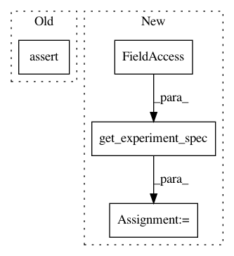

5d8d505c4c9659fb965c91ba365e7d3a1a39e557,tests/test_polyaxonfile/test_polyaxonfile.py,TestPolyaxonfile,test_one_matrix_file_passes,#TestPolyaxonfile#,502
Before Change
declarations = []
for loss in plxfile.matrix["loss"].to_numpy():
declarations.append({"loss": loss})
assert sorted(
plxfile.matrix_declarations, key=lambda x: (x["loss"])) == sorted(
declarations, key=lambda x: (x["loss"]))
assert plxfile.settings is not None
assert plxfile.run_type == RunTypes.LOCAL
for xp in range(plxfile.matrix_space):
After Change
assert plxfile.settings is not None
assert plxfile.run_type == RunTypes.LOCAL
spec = plxfile.get_experiment_spec(matrix_declaration=plxfile.matrix_declaration_test)
assert spec.is_runnable
assert spec.environment is None
assert spec.framework is None
assert spec.cluster_def == ({TaskType.MASTER: 1}, False)
In pattern: SUPERPATTERN
Frequency: 5
Non-data size: 4
Instances
Project Name: polyaxon/polyaxon
Commit Name: 5d8d505c4c9659fb965c91ba365e7d3a1a39e557
Time: 2018-04-04
Author: mouradmourafiq@gmail.com
File Name: tests/test_polyaxonfile/test_polyaxonfile.py
Class Name: TestPolyaxonfile
Method Name: test_one_matrix_file_passes
Project Name: polyaxon/polyaxon
Commit Name: 5d8d505c4c9659fb965c91ba365e7d3a1a39e557
Time: 2018-04-04
Author: mouradmourafiq@gmail.com
File Name: tests/test_polyaxonfile/test_polyaxonfile.py
Class Name: TestPolyaxonfile
Method Name: test_matrix_early_stopping_file_passes
Project Name: polyaxon/polyaxon
Commit Name: 5d8d505c4c9659fb965c91ba365e7d3a1a39e557
Time: 2018-04-04
Author: mouradmourafiq@gmail.com
File Name: tests/test_polyaxonfile/test_polyaxonfile.py
Class Name: TestPolyaxonfile
Method Name: test_matrix_percent_experiments_file_passes
Project Name: polyaxon/polyaxon
Commit Name: 5d8d505c4c9659fb965c91ba365e7d3a1a39e557
Time: 2018-04-04
Author: mouradmourafiq@gmail.com
File Name: tests/test_polyaxonfile/test_polyaxonfile.py
Class Name: TestPolyaxonfile
Method Name: test_matrix_file_passes
Project Name: polyaxon/polyaxon
Commit Name: 5d8d505c4c9659fb965c91ba365e7d3a1a39e557
Time: 2018-04-04
Author: mouradmourafiq@gmail.com
File Name: tests/test_polyaxonfile/test_polyaxonfile.py
Class Name: TestPolyaxonfile
Method Name: test_matrix_large_n_experiments_ignored_file_passes